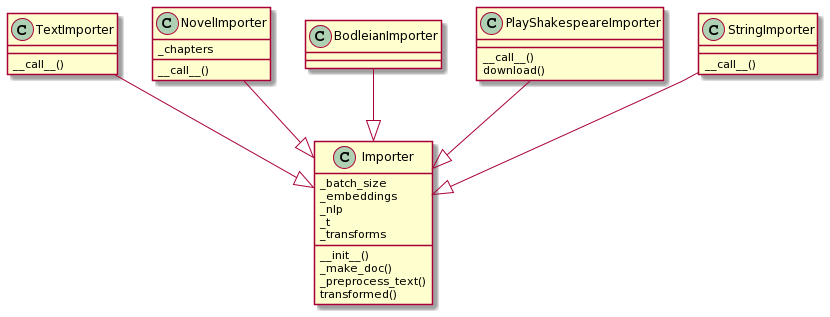

Documents
What is a Document?
A Document in Vectorian terminology is some text we can perform a
search on, e.g. book, a web page, or a Shakespeare play. For example,
the text of Shakespeare's A Midsummer Night's Dream and various metadata
(such as speakers, acts and scenes) about it could be regarded as one Document.
Partitions and Spans
A problem in this terminology arises when we want to search a text on a
finer granularity level, e.g. when we aim to find all of the Document's
sentences that match some query. For example, let us assume we want to
find all sentences in A Midsummer Night's Dream that contain a mention
of Titania. If we regard the whole text of A Midsummer Night's Dream
as one single Document, then the result of our search would be one single
hit, telling us that A Midsummer Night's Dream indeed contains one
occurence of Titania. This obviously is neither very useful nor not what
we set out to achieve.
A common approach to solving this problem is to change terminology
and split the Document into its sentences beforehand and then regard
those sentences as separate Documents. This approach can be confusing
though and has a number of technical and conceptual drawbacks.
The Vectorian takes a different approach and introduces a concept called
Partition, which is a combination of granularity control (the Vectorian
API calls this the Partitions level) and a sliding window specification.
Search operations do not operate on Documents, but instead on Spans that
are generated through applying a Partition on a Document. A Span is a
section of a Document, e.g. a single sentence or a specific sequence of tokens.
Here a three examples to illustrate the concepts - we assume that doc is
a Document and that session is a Session:
doc.spans(session.partition("document"))produces oneSpanthat represents the document as a whole.doc.spans(doc.partition("sentence"))producesSpans such that eachSpanis one sentence of theDocument.doc.spans(doc.partition("token", 5, 1))producesSpanby applying a sliding window of size 5 to the tokens of theDocument.
Which granularity levels (e.g. "document" or "sentence") are available
depends on the Importer used (see next section). The default Importers
support "document", "sentence" and "token".
Importers
An Importer converts some input (e.g. plain text, a XML file, a Web URL, ...)
into a Document. It will perform tokenization, partition detection (e.g.
detection of sentence boundaries) and other related nlp tasks like lemmatization.
The Importer is also responsible for computing contextual embeddings.
Standard importers in the Vectorian include:
StringImporter: turns a string into aDocumentTextImporter: turns a plain text file into aDocumentNovelImporter: imports a novel provided as a plain text file and keeps additional data about the structure of the novel (e.g. chapter breaks) in the resultingDocumentPlayShakespeareImporter: imports data from an XML file from https://www.playshakespeare.com/ - the resultingDocumentknows about speakers, acts and scenes for each line
Here is an example of using StringImporter to create a Document (you
need a spaCy nlp object that knows about the used language):
im = vectorian.importers.StringImporter(nlp)
doc = im("At the station is an art museum.")
Importers - once created - act like factories for Documents, i.e. they can
be used to import multiple Documents.

Persistence
Since the task of importing Documents can take considerable time - due to
various nlp pipeline steps and/or the computation of contextual embeddings -
it is useful to save and load imported Documents to and from disk by using
the Document's save and the static Document.load methods. Note that these
methods do not take a filename, but rather a path, since a single Document
might consist of a number of files.
For saving and loading multiple Document's, the Corpus class provides
some convenience functionality. First, construct a Corpus from your imported
Document's. Then use Corpus.save (and later Corpus.load). As with
Document's, these methods take a path (not a single filename). You can also
construct a corpus by incrementally saving corpus sub sets to a path and then
later on loading the whole Corpus in one go. Be aware that saving the
same set of Documents to the same path will currently cause duplication.